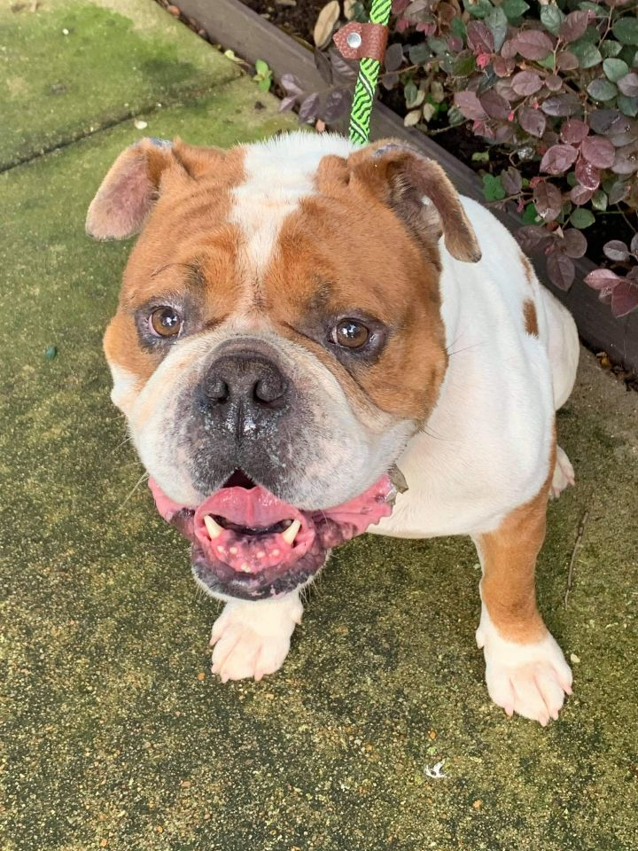
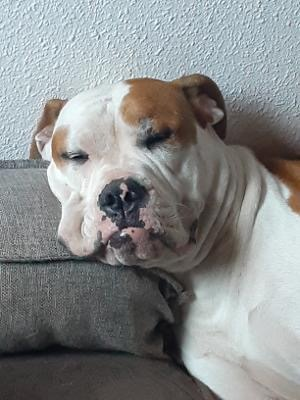
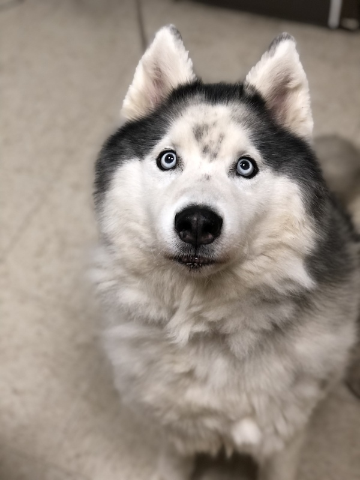

Beau
- Age: 8 Years
- Gender: Male
- Energy Level: Low
- Location: Vancouver, WA
Beau is a pretty happy boy. He is also very sweet, loyal and goofy. If Beau were human, he would be a CEO or boss of a company. He is intelligent, can be independent, knows exactly what he wants and isn't afraid to persist.
Beau is open to any adventure that lies ahead. He is completely non-reactive to other dogs/people on walks. His prey drive suggests he would do best in a home without cats, small animals and children. He is fully crate-trained in his foster home, but it did take time, and he strongly disliked it at first. With persistence and discipline he actually seems to enjoy his crate now. He will probably test these boundaries again in his next household. He is motivated by verbal and physical affection from his person, as well as structure.
Beau would excel in a home with strong handler/s, who will give him as much love and attention as he is willing to offer. He does not like to share his people or space with other dogs so would do best as an only pet. Like most Shepherds, he thrives on routine, boundaries, rules and consistency. He would love a home where he had the opportunity to be a hiking, walking, or even light running partner.
West Coast adoptions only, HOWEVER, if application is strong we may consider placement in other Western US states.
Must have previous or current, purebred German Shepherd experience OR other high drive working breed experience. Have no children under the age of 12 years old OR have extensive experience with children and high drive dogs.
Our adoption process includes- completion of an application, followed by a telephone interview. If that goes well, we will arrange for a home visit.
Adoption Donation: $500.00
Transport along Interstate 5 (Bakersfield, CA to Bellingham, WA) is available but cost not included in adoption fee.

Chicken
- Age: 6 Years
- Gender: Male
- Energy Level: High
- Location: Vacouver, WA
Being a black dog in Texas has not worked out very well in Chicken's favor. Chicken has been in rescue for his entire 2 years of life and would love to fin a home that he can finally call his own. Chicken walks ok on leash and is friendly with people, although he may be initially timid at first, he warms up quick. Chicken would make an excellent hiking buddy!

Brutus
- Age: 5 Years
- Gender: Male
- Energy Level: Low
- Location: Portland. OR
Brutus is a very handsome English Bulldog looking for his forever home. He is friendly with other dogs and has met both males and females. He enjoys going on walks with his four legged friends. His energy is typically low- moderate range.
Brutus walks great on leash and has a lot of practice with his current foster mom. He enjoys exploring and smelling everything! He rarely pulls, unless something really interests him like a squirrel.
He is house broken and will go in a kennel without issues. He is currently crated when unsupervised.
We have no history with cats or kids.
He has gone through some basic training classes and would do best in a home who would continue this training!
Brutus would do best with a fenced yard and would love human companionship!
Brutus can be stubborn at times which we are told is common of the breed. He would do best in a home with someone who has breed experience. Please share on the application what if any experience you have with this breed.

Nola
- Age: 2 Years
- Gender: Female
- Energy Level: Medium
- Location: Battle Ground, WA
Nola is 2 years old a 100 lbs! She knows how to sit and stay and has pretty good manners. She is potty trained, fixed. We have chickens and she has been trained not to chase them. She has made friends with our cats but she does follow them around the house sometimes, which looks suspicious but has never hurt them.Nola is a wonderful loving pet. Great with kids. Loves people. She has lived with other dogs but has Started some fights in the home. They love her, but feel she needs to be an only dog.Nola's adoption donation is $100. Please go to sccpets.com and fill out the adoption application

Ceaser
- Age: 10 Years
- Gender: Male
- Energy Level: Low
- Location: Vancouver, WA
I'm excited to meet my new family! I'm looking for the same things most dogs are: going out for walks, maybe some playtime in the yard, snuggles with my family, and (of course) lots of toys and treats! If you're ready for that, let's meet!
Here's what I need in my new home:
I need to meet any other dogs I might be living with.
I would like to meet any kids I might be living with.
I need a home without cats
I need a yard with a 6 ft wood fence.
I need to be adopted with my best friend Charlie! A member of the adoption team can tell you more.